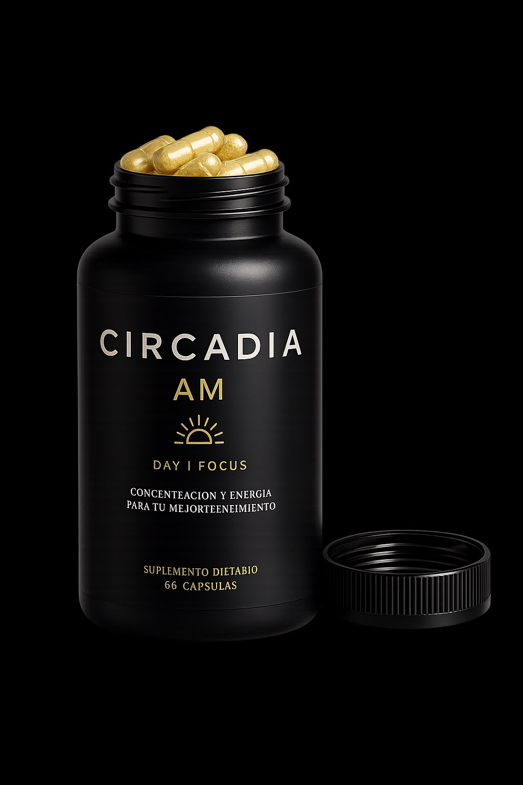
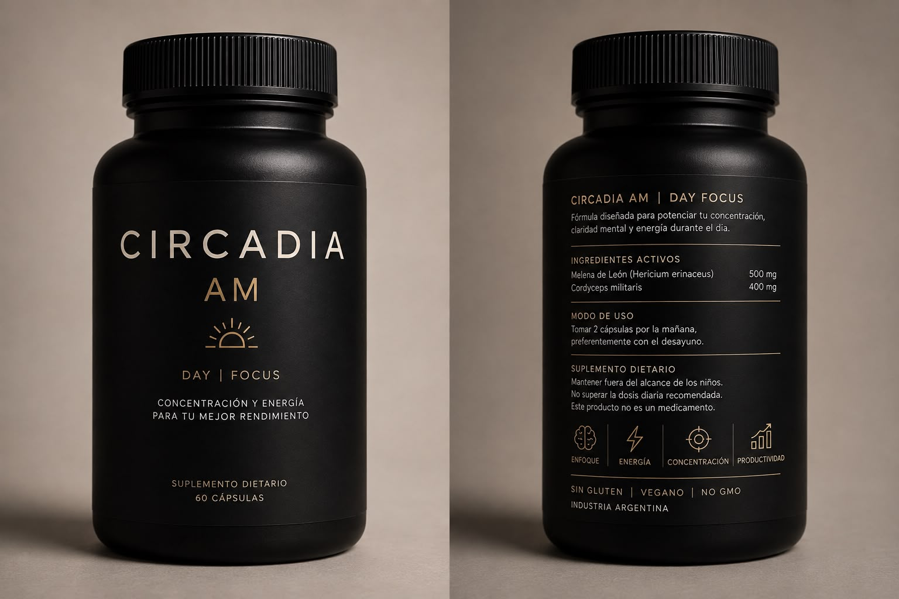
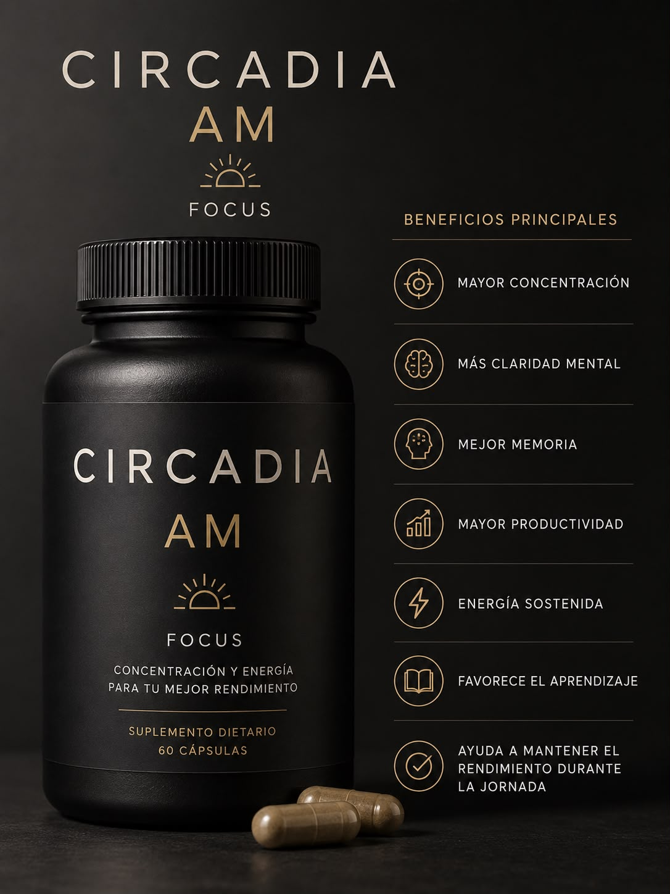
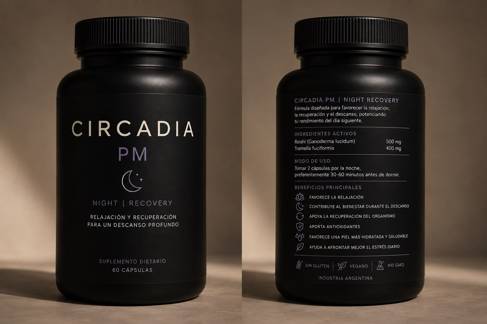

SUPLEMENTOS DIETARIOS · INDUSTRIA ARGENTINA
CIRCADIA
Enfoque de día. Descanso de noche. Dos fórmulas de precisión, diseñadas para acompañar tu reloj biológico — no para pelear contra él.
EL CONCEPTO
Rendís distinto de día que de noche. Tu suplementación también debería.
Tu cuerpo sigue un reloj de 24 horas que decide cuándo tenés más foco y cuándo necesitás descansar de verdad. Circadia se pensó en dos tiempos, no en una fórmula única: AM sostiene tu rendimiento mientras es de día, PM favorece la recuperación mientras dormís.



CIRCADIA AM · DAY | FOCUS
Concentración y energía para tu mejor rendimiento.
Suplemento dietario · 60 cápsulas
Fórmula diseñada para potenciar tu concentración, claridad mental y energía durante el día.
Ingredientes activos
Modo de uso: tomar 2 cápsulas por la mañana, preferentemente con el desayuno.
Beneficios principales
- Mayor concentración
- Más claridad mental
- Mejor memoria
- Mayor productividad
- Energía sostenida
- Favorece el aprendizaje
- Ayuda a mantener el rendimiento durante la jornada
Suplemento dietario. Mantener fuera del alcance de los niños. No superar la dosis diaria recomendada. Este producto no es un medicamento.
CIRCADIA PM · NIGHT | RECOVERY
Relajación y recuperación para un descanso profundo.
Suplemento dietario · 60 cápsulas
Fórmula diseñada para favorecer la relajación, la recuperación y el descanso, potenciando tu rendimiento del día siguiente.
Ingredientes activos
Modo de uso: tomar 2 cápsulas por la noche, preferentemente 30–60 minutos antes de dormir.
Beneficios principales
- Favorece la relajación
- Contribuye al bienestar durante el descanso
- Apoya la recuperación del organismo
- Aporta antioxidantes
- Favorece una piel más hidratada y saludable
- Ayuda a afrontar mejor el estrés diario
Suplemento dietario. Mantener fuera del alcance de los niños. No superar la dosis diaria recomendada. Este producto no es un medicamento.

Circadia: sin gluten, vegano, no GMO, industria argentina, suplemento dietario de 60 cápsulas por pomo.
QUIENES YA PROBARON SU RITMO
Lo que cuentan de su propio ritual
"Desde que tomo AM por la mañana llego mucho más entero a las reuniones de la tarde. Se nota, sobre todo en las semanas pesadas."
"Cambié la rutina antes de dormir con PM y noto la diferencia al otro día. Me costaba bajar un cambio a la noche y ahora es distinto."
"Uso los dos: AM para laburar con la cabeza despejada y PM para desconectar de verdad a la noche. El combo tiene sentido."
PREGUNTAS FRECUENTES
Antes de empezar tu ritual
¿Puedo tomar Circadia AM y PM el mismo día?
Sí, están pensados para complementarse: AM por la mañana con el desayuno, PM por la noche antes de dormir.
¿Tienen contraindicaciones?
Son suplementos dietarios, no medicamentos. Si estás embarazada, en lactancia o tomás alguna medicación, consultá antes a tu médico de confianza.
¿Cuánto tarda en notarse el efecto?
Varía según cada persona y la constancia en el uso diario. Acompañan tu rutina; no reemplazan el descanso ni una alimentación equilibrada.
¿De qué están hechos? ¿Son veganos?
Sí. Las dos fórmulas son sin gluten, veganas y no GMO, elaboradas en Argentina.
EMPEZÁ HOY
Tu día y tu noche, con un ritmo a favor.
Escribinos por WhatsApp y te ayudamos a elegir tu ritual Circadia.
Escribinos por WhatsAppCircadia — suplementos dietarios. Mantener fuera del alcance de los niños. No superar la dosis diaria recomendada. Estos productos no son medicamentos.